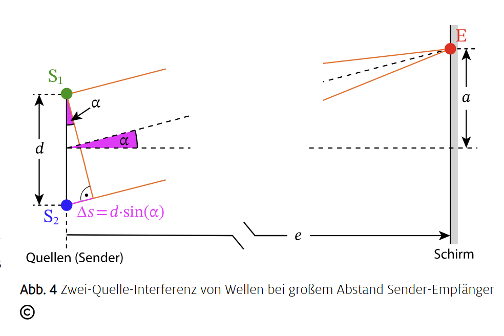
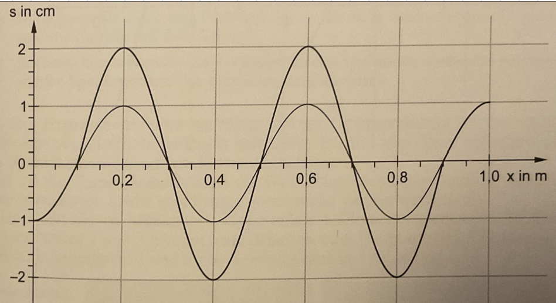
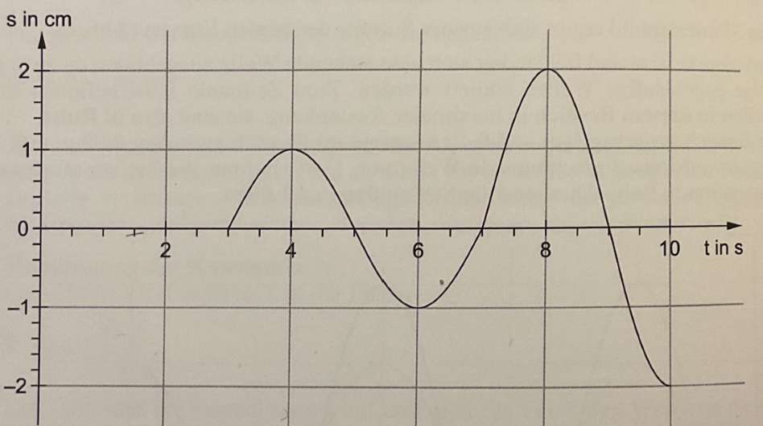
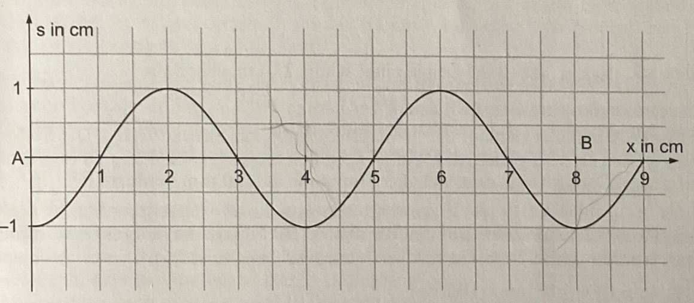
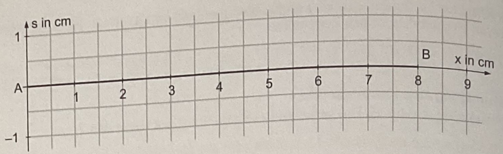
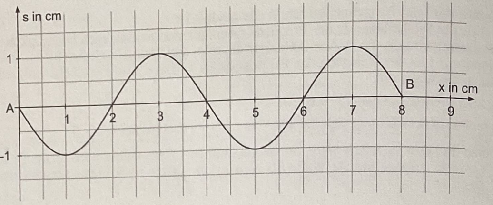

Nachdenkfrage
Sie können sich verstärken, abschwächen oder sogar auslöschen.
Sie können sich verstärken, abschwächen oder sogar auslöschen.
Nur Wellen überlagern sich so, dass regelmäßige Maxima und Minima entstehen. Teilchen alleine würden kein stabiles Muster erzeugen.
a: Die Überlagerung von zwei oder mehr Wellen
Interferenz ist die Überlagerung von Wellen.
b: Die Amplituden schwächen sich oder löschen sich aus
Destruktiv bedeutet Abschwächung oder Auslöschung.
a: Schallwellen
b: elektromagnetischen Wellen
c: Materiewellen
Interferenz ist ein allgemeines Wellenphänomen.
Bei der Superposition addieren sich die momentanen gerichteten Auslenkungen y = y₁+y₂. Gleichphasige Beiträge verstärken sich, gegenphasige schwächen sich; gleiche Amplituden können sich vollständig auslöschen. Dieses Interferenzprinzip gilt für mechanische, elektromagnetische und Materiewellen. Bei Licht zeigen Intensitätsmaxima helle und Intensitätsminima dunkle Streifen; ein stabiles Muster setzt eine stabile relative Phase voraus.
Eine mögliche Antwort
Bei f = 1,1 ist y(E) = 0 ein Maximum mit Δs/λ = 0. Das erste Minimum liegt mit dem ganzzahligen Regler ungefähr bei y(E) = 123 und Δs/λ = 0,499. Bei f = 2,6 ist das zentrale Maximum weiter bei y(E) = 0 mit Δs/λ = 0, während das erste Minimum etwa bei y(E) = 51 und Δs/λ = 0,503 liegt. Die Cursorwerte sind Simulationskoordinaten, keine Meterangaben. Bei konstantem c verkleinert eine größere Frequenz die Wellenlänge; deshalb rücken die Maxima und Minima näher zur Mitte. Da der Cursor nur ganzzahlige Schritte zulässt, ist ein Minimum meist nur nahezu null.
Bei konstruktiver Interferenz ist der Gangunterschied ein ganzzahliges Vielfaches der Wellenlänge: $\Delta s = $k$\cdot \lambda$. Das Ergebnis ist ein Maximum.
| Begriff | Zuordnung |
|---|---|
| $\Delta s = k \cdot \lambda$ | Konstruktive Interferenz (Maximum) |
| $\Delta s = (k-0,5) \cdot \lambda$ | Destruktive Interferenz (Minimum) |
| Wellenberg + Wellenberg | Amplitude wird größer |
| Wellenberg + Wellental | Amplitude wird kleiner |
Für zwei gleichphasige Quellen gleicher Frequenz gilt Δφ = 2πΔs/λ. Bei Δs = mλ kommen die Wellen gleichphasig an: Gesamtamplitude 2A. Bei |Δs| = (j−½)λ kommen sie gegenphasig an: Gesamtamplitude 0 für gleiche Einzelamplituden. Allgemein ist Ages = 2A|cos(πΔs/λ)|. Bei ungleichen Einzelamplituden bleibt selbst am Minimum eine Restamplitude |A₁−A₂|.
Nur bei fester Phasenbeziehung bleiben die Maxima und Minima an festen Orten bestehen.
a: Gleiche Frequenz und feste Phasenbeziehung
Kohärenz bedeutet gleiche Frequenz und stabile Phasenbeziehung.
b: Sie können nicht interferieren.
Orthogonal polarisierte Wellen überlagern sich vektoriell, besitzen aber keinen Interferenzterm in der Gesamtintensität eines polarisationsunabhängigen Detektors. Ein gemeinsamer Analysator kann interferierende Komponenten auswählen.
b: Die Amplitude wächst und schrumpft periodisch.
Schwebung zeigt sich als periodische Amplitudenänderung.
Du hörst eine Schwebung: Die Amplitude wird periodisch lauter und leiser, weil sich zwei Wellen mit leicht unterschiedlichen Frequenzen überlagern.
Kohärente Wellen haben die gleiche Frequenz und eine feste Phasenbeziehung. Sind zwei Wellen zueinander senkrecht polarisiert, können sie nicht zur Interferenz beitragen.
Eine mögliche Antwort
Ich überlagere beide Lichtstrahlen auf einem Schirm und passe ihre Polarisationen sowie ihre Intensitäten an. Ich variiere den Gangunterschied und beobachte, ob helle und dunkle Streifen über die Messzeit ortsfest bleiben. Ein dauerhaft kontrastreiches Muster zeigt eine stabile relative Phase und damit Kohärenz innerhalb der Messdauer und Kohärenzlänge. Gleiche Farbe allein reicht nicht: Zwei unabhängige Lampen haben zufällige Phasenschwankungen. Bleibt ein Muster aus, prüfe ich zunächst Ausrichtung, Polarisation, Helligkeit und Gangunterschied; sein Fehlen beweist unter ungeprüften Bedingungen noch keine Inkohärenz.
| Begriff | Zuordnung |
|---|---|
| Kohärenz | Gleiche Frequenz, feste Phasenbeziehung |
| Schwebung | Amplitude ändert sich periodisch |
| Polarisation | Richtung der Schwingung |
| Senkrecht polarisiert | Keine Interferenz möglich |

Eine mögliche Antwort
Im Fernfeld sind die Strahlen zum Beobachtungspunkt nahezu parallel. Die Projektion des Quellenabstands d in Strahlrichtung ergibt Δs ≈ d sinα. Der Schirm liefert tanα = a/e. Wenn |a| ≪ e, ist α klein und sinα ≈ tanα. Einsetzen führt zu Δs ≈ da/e. Die Fernfeldannahme e ≫ d ersetzt dabei nicht die zusätzliche Kleinwinkelannahme |a| ≪ e.
b: $\Delta s = d \cdot \frac{a}{e}$
Mit $\tan(\alpha) \approx \sin(\alpha)$ und $\tan(\alpha)=\frac{a}{e}$ ergibt sich $\Delta s = d \cdot \frac{a}{e}$.
b: Die Abstände werden kleiner.
Aus $a=\frac{e}{d}\cdot k\cdot \lambda$ folgt: größeres $d$ ergibt kleinere Abstände.
Weil der Beobachtungspunkt weit entfernt ist ($e \gg d$) und damit $\alpha$ sehr klein ist. Für kleine Winkel sind $\tan(\alpha)$ und $\sin(\alpha)$ nahezu gleich.
Der Gangunterschied ist $\Delta s$ und ergibt sich geometrisch zu $\Delta s = d \cdot \sin(\alpha)$. Für kleine Winkel gilt $\tan(\alpha)$ ist nahezu gleich $\sin(\alpha)$ und $\tan(\alpha)$ = $\frac{a}{e}$. Daraus folgt $\Delta s = d \cdot \frac{a}{e}$.
Eine mögliche Antwort
Der Abstand benachbarter Maxima beträgt näherungsweise Δa = eλ/d. Doppelter Schirmabstand verdoppelt ihn. Doppelter Quellenabstand halbiert ihn. Doppelte Wellenlänge verdoppelt ihn; bei konstantem c erreicht man das durch Halbieren der Frequenz. Gleiche Intensität ist für die Streifenlage nicht nötig, beeinflusst aber den Kontrast. Für große Winkel sind die Schirmabstände nicht mehr gleichmäßig.
| Begriff | Zuordnung |
|---|---|
| d | Quellenabstand |
| e | Schirmabstand |
| a | Seitlicher Abstand vom Mittelpunkt |
| Gangunterschied Δs | Differenz der Weglängen |
Die Quellen S₁ und S₂ liegen im Abstand d übereinander. Ihre Mitte M hat horizontalen Abstand e zum Schirm; E liegt dort um a über der Mitte. ME bildet mit der Horizontalen den Winkel α. Die Wege S₁E und S₂E unterscheiden sich um Δs. Im Fernfeld Δs ≈ d sinα; am Schirm tanα = a/e, bei kleinen Winkeln also Δs ≈ da/e.
Für gleichphasige Quellen: Maxima Δs = mλ, sinα = mλ/d und a ≈ emλ/d, m ∈ ℤ. Die beidseitigen Minima werden sauber als |Δs| = (j−½)λ, j = 1,2,… beschrieben: sin|α| = (j−½)λ/d und |a| ≈ e(j−½)λ/d. Das erste Minimum liegt also beidseits bei |a| ≈ eλ/(2d); negative Ordnungen dürfen nicht mit derselben unsymmetrischen Schreibweise k−½ durchnummeriert werden.
b: $\Delta s = k\lambda$
Maxima entstehen bei phasengleicher Überlagerung: $\Delta s = k\lambda$.
b: Die Abstände werden kleiner.
Aus $a=\frac{e}{d}\cdot k\lambda$ folgt: größeres $d$ -> kleinere Abstände.
a: $a = e\cdot\tan\left(\arcsin\left(\frac{k\lambda}{d}\right)\right)$
Ohne Kleinwinkelnäherung wird $a$ über $\tan(\arcsin(\cdot))$ berechnet.
Maxima erfüllen $\Delta s = k\lambda$, Minima $\Delta s = \left(k-\tfrac{1}{2}\right)\lambda$. Der Gangunterschied wächst kontinuierlich mit dem Winkel bzw. dem Ort auf dem Schirm. Zwischen zwei ganzzahligen Vielfachen liegt zwangsläufig ein halbes Vielfaches - daher liegen die Minima zwischen benachbarten Maxima.
Für Maxima gilt der Gangunterschied $k\lambda$. Für Minima gilt $\left(k-\tfrac{1}{2}\right)\lambda$. Beim Schirmansatz (kleiner Winkel) nutzt man $\sin(\alpha)$ ≈ $a$/$e$.
Eine mögliche Antwort
Ich wähle λ = 600 nm, d = 0,50 mm und e = 2,0 m. Für das erste Maximum gilt Δs = λ und a₁ ≈ eλ/d = 2,4 mm. Für das erste Minimum gilt |Δs| = λ/2 und |a| ≈ 1,2 mm. Weil |a|/e ≈ 0,0012, ist die Kleinwinkelnäherung gut. Die fernfeldgenaue Winkelbeziehung liefert a₁ = e tan(arcsin(λ/d)), praktisch denselben Wert. Die wirklich exakte Geometrie endlicher Punktquellen benutzt hingegen die Differenz der beiden Wurzeln √(e²+(a+d/2)²) − √(e²+(a−d/2)²).
| Begriff | Zuordnung |
|---|---|
| $\Delta s = k\lambda$ | Maximum (konstruktive Interferenz) |
| $\Delta s = \left(k-\tfrac{1}{2}\right)\lambda$ | Minimum (destruktive Interferenz) |
| $a = \frac{e}{d}\cdot k\lambda$ | Maxima auf dem Schirm (Kleinwinkelnäherung) |
| $a = \frac{e}{d}\left(k-\tfrac{1}{2}\right)\lambda$ | Minima auf dem Schirm (Kleinwinkelnäherung) |
a) Bei 400 Hz tritt erstmals ein innerer Knoten in der Drahtmitte auf: zweite Eigenschwingung, f₁ = 200 Hz und λ₂ = L = 0,60 m. c = λ₂f₂ = 240 m/s. Die Formulierung „von 0 auf 100 Hz“ widerspricht der Beobachtung bei 400 Hz; verwendet wird der angegebene Beobachtungswert.
b) Abb. 4a (y = 0) passt bei 600 Hz zu einem Knoten bei x = 20 oder 40 cm. Abb. 4b hat T ≈ 1,67 ms und passt zu 600 Hz außerhalb eines Knotens. Abb. 4c hat T = 2,00 ms und passt zu einer erzwungenen Bewegung bei 500 Hz: Dass 500 Hz keine Eigenfrequenz ist, schließt eine vom Elektromagneten erzwungene Schwingung nicht aus. Ohne Angaben zu Anregungsort und Dämpfung lässt sich deren räumliche Form nicht eindeutig bestimmen. Abb. 4d zeigt eine dauerhafte Auslenkung von 2 mm und passt nicht zur beschriebenen Wechselanregung um y = 0 ohne statische Zusatzkraft.
c) Axel: falsch, die gerade Momentaufnahme kann ein gemeinsamer Nulldurchgang sein. Christoph: falsch begründet, ein einzelner Knoten erklärt nicht die Auslenkung null an allen Orten. Eva: richtig, eine Eigenschwingung kann diesen gemeinsamen Nulldurchgang besitzen. Petra: falsch, in diesem Moment steckt die Schwingungsenergie in der Bewegung, die das Ortsbild nicht zeigt.
a) Bei 400 Hz tritt erstmals ein innerer Knoten in der Drahtmitte auf: zweite Eigenschwingung, f₁ = 200 Hz und λ₂ = L = 0,60 m. c = λ₂f₂ = 240 m/s. Die Formulierung „von 0 auf 100 Hz“ widerspricht der Beobachtung bei 400 Hz; verwendet wird der angegebene Beobachtungswert.
b) Abb. 4a (y = 0) passt bei 600 Hz zu einem Knoten bei x = 20 oder 40 cm. Abb. 4b hat T ≈ 1,67 ms und passt zu 600 Hz außerhalb eines Knotens. Abb. 4c hat T = 2,00 ms und passt zu einer erzwungenen Bewegung bei 500 Hz: Dass 500 Hz keine Eigenfrequenz ist, schließt eine vom Elektromagneten erzwungene Schwingung nicht aus. Ohne Angaben zu Anregungsort und Dämpfung lässt sich deren räumliche Form nicht eindeutig bestimmen. Abb. 4d zeigt eine dauerhafte Auslenkung von 2 mm und passt nicht zur beschriebenen Wechselanregung um y = 0 ohne statische Zusatzkraft.
c) Axel: falsch, die gerade Momentaufnahme kann ein gemeinsamer Nulldurchgang sein. Christoph: falsch begründet, ein einzelner Knoten erklärt nicht die Auslenkung null an allen Orten. Eva: richtig, eine Eigenschwingung kann diesen gemeinsamen Nulldurchgang besitzen. Petra: falsch, in diesem Moment steckt die Schwingungsenergie in der Bewegung, die das Ortsbild nicht zeigt.
a) c = 50 cm/5,0 s = 10 cm/s; T = 1/f = 4 s und λ = cT = 40 cm. b) In der Mitte sind die Laufzeiten gleich; die gegenphasigen Quellen liefern jederzeit entgegengesetzte Auslenkungen, vor der Ankunft beider Fronten bleibt die Mitte ebenfalls ruhig.
c) Nach 9 s liegt die linke Front bei 90 cm, die rechte bei 10 cm. 90 cm entsprechen 2,25λ. Mit x in cm gilt in 0 ≤ x < 10: y = −cos(πx/20) cm; in 10 ≤ x ≤ 90: y = −2cos(πx/20) cm; in 90 < x ≤ 100: y = −cos(πx/20) cm. In der Mitte liegt bei x = 50 cm ein Knoten; weitere Nullen liegen bei 10, 30, 70 und 90 cm. Zu genau diesem Zeitpunkt ist jedoch die Teilchengeschwindigkeit an allen Punkten null: Beide Einzelwellen stehen lokal an Umkehrpunkten oder sind gerade noch nicht angekommen. „In Ruhe“ ist nicht gleichbedeutend mit „Auslenkung null“.
d) Die erste positive Bewegung ab 3 s kommt vom rechten Erreger; der Punkt liegt 30 cm von rechts, also x = 70 cm von links. Bis 3 s ruht er, von 3 bis 7 s gilt y = 1 cm sin[π(t−3 s)/(2 s)]. Ab 7 s löscht die von links ankommende gegenphasige Welle die Bewegung aus. e) Bei gleichphasigen Quellen gilt für denselben Punkt: y = 0 bis 3 s; y = 1 cm sin[π(t−3 s)/(2 s)] für 3 ≤ t < 7 s; y = 2 cm sin[π(t−3 s)/(2 s)] für 7 ≤ t ≤ 10 s. Maxima: (4 s;1 cm), (8 s;2 cm); Minimum: (6 s;−1 cm), Endwert (10 s;−2 cm).


a) c = 50 cm/5,0 s = 10 cm/s; T = 1/f = 4 s und λ = cT = 40 cm. b) In der Mitte sind die Laufzeiten gleich; die gegenphasigen Quellen liefern jederzeit entgegengesetzte Auslenkungen, vor der Ankunft beider Fronten bleibt die Mitte ebenfalls ruhig.
c) Nach 9 s liegt die linke Front bei 90 cm, die rechte bei 10 cm. 90 cm entsprechen 2,25λ. Mit x in cm gilt in 0 ≤ x < 10: y = −cos(πx/20) cm; in 10 ≤ x ≤ 90: y = −2cos(πx/20) cm; in 90 < x ≤ 100: y = −cos(πx/20) cm. In der Mitte liegt bei x = 50 cm ein Knoten; weitere Nullen liegen bei 10, 30, 70 und 90 cm. Zu genau diesem Zeitpunkt ist jedoch die Teilchengeschwindigkeit an allen Punkten null: Beide Einzelwellen stehen lokal an Umkehrpunkten oder sind gerade noch nicht angekommen. „In Ruhe“ ist nicht gleichbedeutend mit „Auslenkung null“.
d) Die erste positive Bewegung ab 3 s kommt vom rechten Erreger; der Punkt liegt 30 cm von rechts, also x = 70 cm von links. Bis 3 s ruht er, von 3 bis 7 s gilt y = 1 cm sin[π(t−3 s)/(2 s)]. Ab 7 s löscht die von links ankommende gegenphasige Welle die Bewegung aus. e) Bei gleichphasigen Quellen gilt für denselben Punkt: y = 0 bis 3 s; y = 1 cm sin[π(t−3 s)/(2 s)] für 3 ≤ t < 7 s; y = 2 cm sin[π(t−3 s)/(2 s)] für 7 ≤ t ≤ 10 s. Maxima: (4 s;1 cm), (8 s;2 cm); Minimum: (6 s;−1 cm), Endwert (10 s;−2 cm).
a) AQ = √(48²+36²) cm = 60 cm, BQ = 48−36 = 12 cm. Δs = 48 cm, λ = c/f = 32 cm; damit Δs = 1,5λ. b) Die B-Welle erreicht Q nach 0,375 s, die A-Welle nach 1,875 s. Für 0 ≤ t < 0,375 s gilt y = 0; für 0,375 ≤ t < 1,875 s gilt y = −1 mm sin[2π(t−0,375 s)/s]; ab 1,875 s gilt y = 0 durch vollständige Auslöschung. Zeichnungspunkte: (0,375 s;0), (0,625 s;−1 mm), (0,875 s;0), (1,125 s;+1 mm), (1,375 s;0), (1,625 s;−1 mm), (1,875 s;0), danach waagrecht bis 2,5 s. Im mittleren Zeitabschnitt stammt die beobachtete Schwingung von B, nicht von A.
a) AQ = √(48²+36²) cm = 60 cm, BQ = 48−36 = 12 cm. Δs = 48 cm, λ = c/f = 32 cm; damit Δs = 1,5λ. b) Die B-Welle erreicht Q nach 0,375 s, die A-Welle nach 1,875 s. Für 0 ≤ t < 0,375 s gilt y = 0; für 0,375 ≤ t < 1,875 s gilt y = −1 mm sin[2π(t−0,375 s)/s]; ab 1,875 s gilt y = 0 durch vollständige Auslöschung. Zeichnungspunkte: (0,375 s;0), (0,625 s;−1 mm), (0,875 s;0), (1,125 s;+1 mm), (1,375 s;0), (1,625 s;−1 mm), (1,875 s;0), danach waagrecht bis 2,5 s. Im mittleren Zeitabschnitt stammt die beobachtete Schwingung von B, nicht von A.
a) AQ = √(48²+36²) cm = 60 cm, BQ = 48−36 = 12 cm. Δs = 48 cm, λ = c/f = 32 cm; damit Δs = 1,5λ. b) Die B-Welle erreicht Q nach 0,375 s, die A-Welle nach 1,875 s. Für 0 ≤ t < 0,375 s gilt y = 0; für 0,375 ≤ t < 1,875 s gilt y = −1 mm sin[2π(t−0,375 s)/s]; ab 1,875 s gilt y = 0 durch vollständige Auslöschung. Zeichnungspunkte: (0,375 s;0), (0,625 s;−1 mm), (0,875 s;0), (1,125 s;+1 mm), (1,375 s;0), (1,625 s;−1 mm), (1,875 s;0), danach waagrecht bis 2,5 s. Im mittleren Zeitabschnitt stammt die beobachtete Schwingung von B, nicht von A.
a) λ = 4 cm, T = 0,40 s, c = 10 cm/s. Nach 0,10 s ist die fortschreitende Welle um 1 cm nach rechts verschoben: y = −1 cm cos(πx/2 cm). b) Für die stehende Welle y = 1 cm sin(πx/2 cm) cos(2πt/0,40 s) gilt nach T/4: y = 0 überall. c) Die beiden Profile stimmen erstmals nach T/2 = 0,20 s wieder überein. d) Beide sind dann y = −1 cm sin(πx/2 cm), also das negative Anfangsprofil; Minima bei 1 und 5 cm, Maxima bei 3 und 7 cm, Nullen bei 0, 2, 4, 6 und 8 cm.
e) Gleichphasig: A liegt auf der Mittelsenkrechten, Δs = 0 und Gesamtamplitude 2 mm. Für B beträgt Δs = √(6²+8²)−8 = 2 cm = λ/2; für C beträgt Δs = 6 cm = 3λ/2. Daher AB = AC = 0. f) Gegenphasig vertauschen sich Maxima und Minima: AA = 0, AB = AC = 2 mm.
g) Gegenphasige Quellen im Abstand 8 cm erzeugen Maxima bei |Δs| = 2 cm oder 6 cm, nicht bei Δs = 0, 4 oder 8 cm. Auf dem Kreis r = 10 cm ist jedes dieser beiden Betragsniveaus in jedem der vier Quadranten einmal vertreten. Es gibt somit acht Punkte maximaler Amplitude. Für einen Winkel θ zur Quellenverbindung gilt Δs = √(116+80cosθ)−√(116−80cosθ) cm; Maxima liegen ungefähr bei θ = 75,5° und 38,4° sowie den Spiegelungen dieser Winkel.



a) λ = 4 cm, T = 0,40 s, c = 10 cm/s. Nach 0,10 s ist die fortschreitende Welle um 1 cm nach rechts verschoben: y = −1 cm cos(πx/2 cm). b) Für die stehende Welle y = 1 cm sin(πx/2 cm) cos(2πt/0,40 s) gilt nach T/4: y = 0 überall. c) Die beiden Profile stimmen erstmals nach T/2 = 0,20 s wieder überein. d) Beide sind dann y = −1 cm sin(πx/2 cm), also das negative Anfangsprofil; Minima bei 1 und 5 cm, Maxima bei 3 und 7 cm, Nullen bei 0, 2, 4, 6 und 8 cm.
e) Gleichphasig: A liegt auf der Mittelsenkrechten, Δs = 0 und Gesamtamplitude 2 mm. Für B beträgt Δs = √(6²+8²)−8 = 2 cm = λ/2; für C beträgt Δs = 6 cm = 3λ/2. Daher AB = AC = 0. f) Gegenphasig vertauschen sich Maxima und Minima: AA = 0, AB = AC = 2 mm.
g) Gegenphasige Quellen im Abstand 8 cm erzeugen Maxima bei |Δs| = 2 cm oder 6 cm, nicht bei Δs = 0, 4 oder 8 cm. Auf dem Kreis r = 10 cm ist jedes dieser beiden Betragsniveaus in jedem der vier Quadranten einmal vertreten. Es gibt somit acht Punkte maximaler Amplitude. Für einen Winkel θ zur Quellenverbindung gilt Δs = √(116+80cosθ)−√(116−80cosθ) cm; Maxima liegen ungefähr bei θ = 75,5° und 38,4° sowie den Spiegelungen dieser Winkel.
a) λ = 4 cm, T = 0,40 s, c = 10 cm/s. Nach 0,10 s ist die fortschreitende Welle um 1 cm nach rechts verschoben: y = −1 cm cos(πx/2 cm). b) Für die stehende Welle y = 1 cm sin(πx/2 cm) cos(2πt/0,40 s) gilt nach T/4: y = 0 überall. c) Die beiden Profile stimmen erstmals nach T/2 = 0,20 s wieder überein. d) Beide sind dann y = −1 cm sin(πx/2 cm), also das negative Anfangsprofil; Minima bei 1 und 5 cm, Maxima bei 3 und 7 cm, Nullen bei 0, 2, 4, 6 und 8 cm.
e) Gleichphasig: A liegt auf der Mittelsenkrechten, Δs = 0 und Gesamtamplitude 2 mm. Für B beträgt Δs = √(6²+8²)−8 = 2 cm = λ/2; für C beträgt Δs = 6 cm = 3λ/2. Daher AB = AC = 0. f) Gegenphasig vertauschen sich Maxima und Minima: AA = 0, AB = AC = 2 mm.
g) Gegenphasige Quellen im Abstand 8 cm erzeugen Maxima bei |Δs| = 2 cm oder 6 cm, nicht bei Δs = 0, 4 oder 8 cm. Auf dem Kreis r = 10 cm ist jedes dieser beiden Betragsniveaus in jedem der vier Quadranten einmal vertreten. Es gibt somit acht Punkte maximaler Amplitude. Für einen Winkel θ zur Quellenverbindung gilt Δs = √(116+80cosθ)−√(116−80cosθ) cm; Maxima liegen ungefähr bei θ = 75,5° und 38,4° sowie den Spiegelungen dieser Winkel.